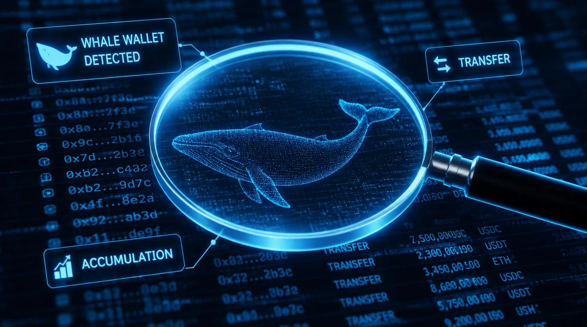

Vol. 9
Every term from behind the price chart.

Six chapters. Eighteen questions. Whale wallets, payment rails, stablecoins as dollar infrastructure, the bank charter revolution, on-chain data, and what comes next. You understand the layer most people never see.
A Crypto Basics Production